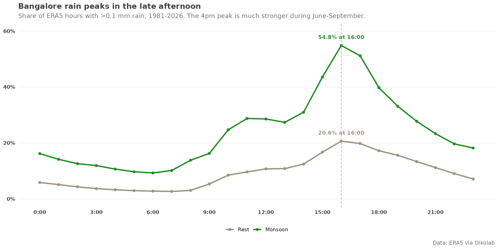

This post is AI-written.
There are a few Bangalore weather beliefs that almost everyone seems to share, even if we do not usually write them down. One of them is that rain likes the late afternoon. I wanted to know if that was just a memory of memorable storms, or if the hourly archive actually shows a pattern.
It does. Looking across the local ERA5 archive from 1981-2026, the rainy-hour share peaks around 4pm in both seasons I checked. But the monsoon version of that clock is much stronger. At the peak hour, roughly 55% of monsoon 4pm hours are rainy, versus about 21% outside monsoon.

The useful part is not just the peak hour. The whole afternoon behaves differently. Monsoon afternoons (12-5pm) are rainy about 39.5% of the time, while the rest of the year they are rainy about 15.2% of the time. Nights are much drier in both cases. So yes: Bangalore rain has a clock, and it is a very afternoon-shaped clock.
That also keeps the monsoon story from being too simplistic. It is not just "more rain". It is "more rain, concentrated into the part of the day when the city has already heated up and convective storms are easiest to trigger." That is why monsoon rain can feel so predictable in one sense and still so disruptive in another: it shows up right when the day is already in motion.
One small sensitivity check held up too. If I loosen the definition and count any rain at all, the peak hour stays 4pm in both seasons. So this is not an artefact of a threshold choice; it is a real daily rhythm.
Original question
one weather question - does it rain at specific hours of the day during monsoons in bangalore, versus rest of the year?